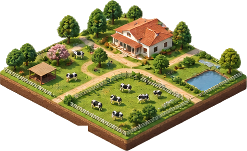

Every season, decisions are made before anyone knows what the season will bring.
How much to plant. Where to move a . When to irrigate. Which machinery to deploy. The land changes, the shifts, animals respond, and systems that appeared stable reveal their limits.

Uncertainty is not a theory. Over three decades, disasters have caused an estimated $3.8 trillion in global crop and livestock production losses, according to the FAO. In Brazil, Embrapa's research on agricultural risk documents how , floods, pests, and climate pressures threaten production.
Behind those figures are decisions made with incomplete information, and consequences that cannot always be reversed.
We started with a question: what if some of those decisions could be examined before they become irreversible?
At Riose, we are building worlds where decisions have consequences.
In a simulated farm, animals move, pastures recover or degrade, water becomes scarce or abundant, and interventions change what happens next. A scenario is not a static picture. It is a system of interacting processes, shaped by evidence, assumptions, constraints, and time.
A useful simulation must do more than look believable. It must make its assumptions visible, be compared with observations, and expose where it is uncertain. It should help someone ask a better question, not pretend to supply a perfect answer.
We are building Riose in Brazil, beginning with agriculture because its challenges are physical, interconnected, and often expensive to reverse.
But agriculture is our starting point, not our boundary.
Factories, energy systems, infrastructure, and environments face the same fundamental challenge: decisions must be made before their consequences are fully understood.
Different worlds demand different models. They share the need for a place where alternatives can be explored, compared, and challenged.
We do not want to replace human judgment. We want to give it room to experiment.
Before a field is altered, a resource is committed, or a risk becomes a loss, there should be another place to try.
That is the world we want to build.